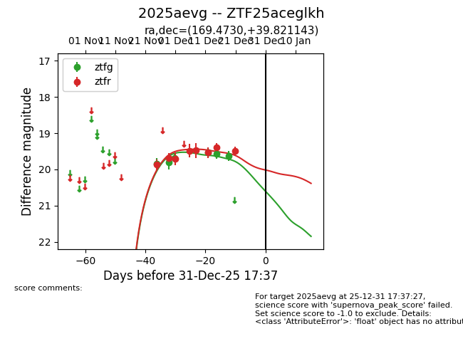
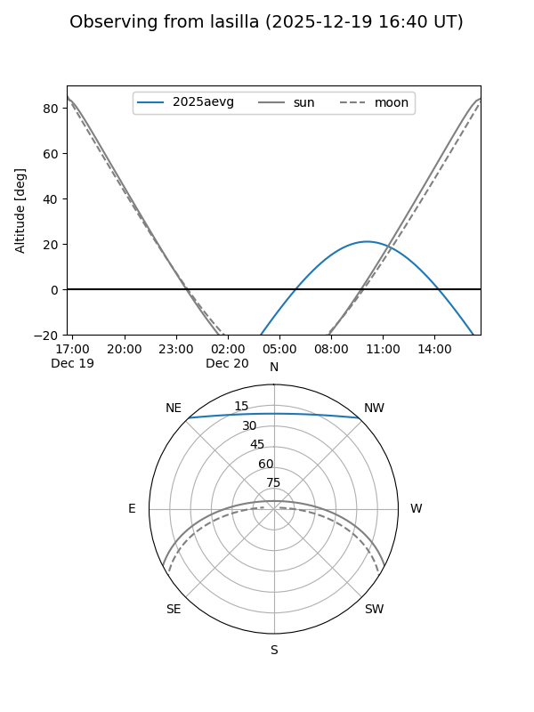
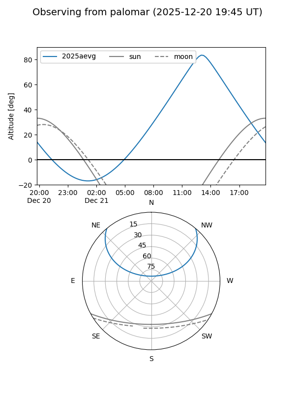
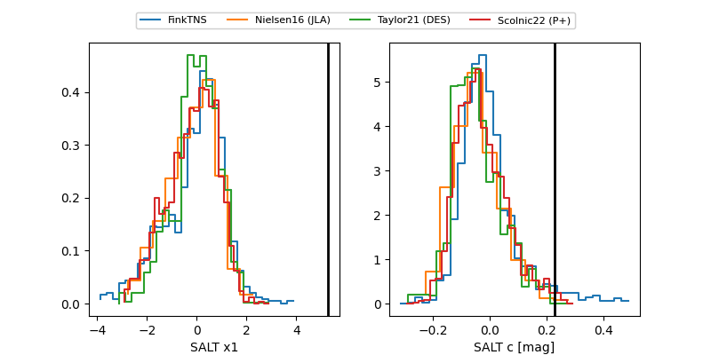

2025aevg
Target 2025aevg at 2025-12-31 17:59
Aliases and brokers:
FINK: link
Lasair: link
ALeRCE: link
TNS: link
YSE: link
alt names
ZTF25aceglkh (ztf,fink_ztf)
2025aevg (tns,yse)
Coordinates:
equatorial (ra, dec) = 169.4730,+39.82114
equatorial (HMS+DMS) = 11:17:53.53,+39:49:16.12
galactic (l, b) = (173.7481,+66.83953)
Flags:
Photometry:
last ztfg=19.63, ztfr=19.48
6 ztfg, 8 ztfr detections
Lightcurve

Visibility


Additional plots
